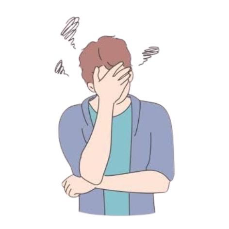
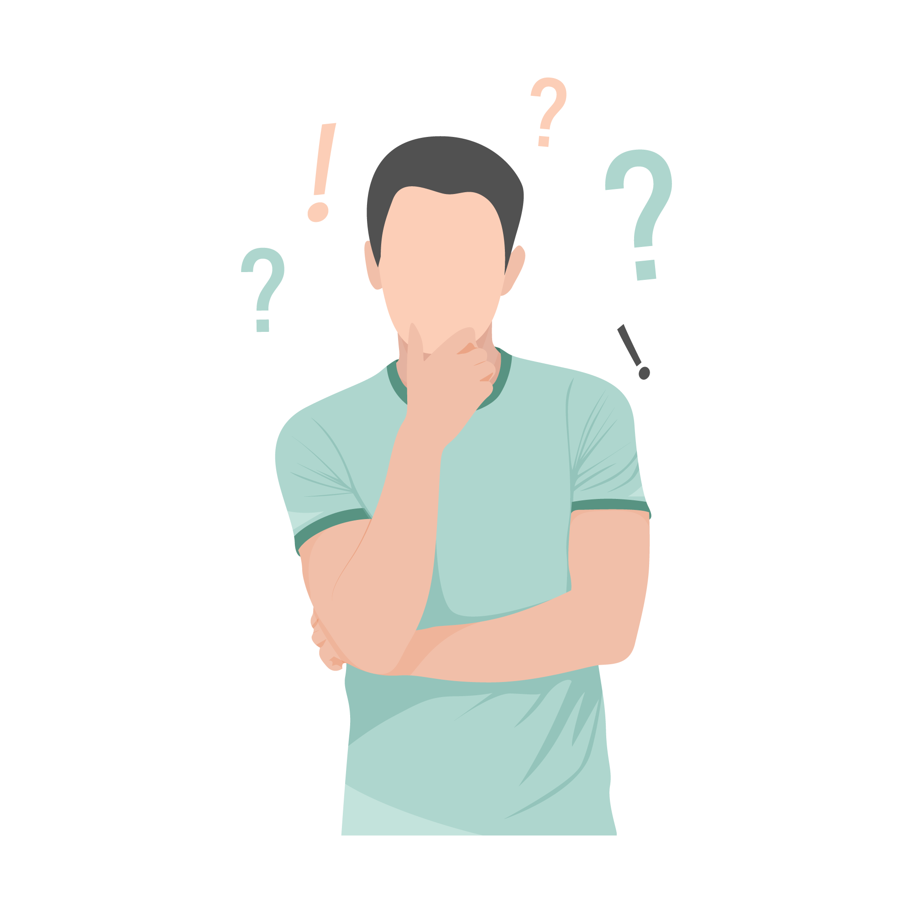
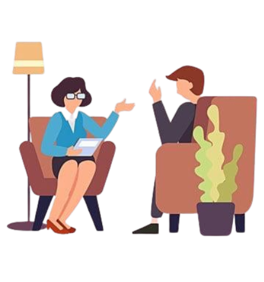
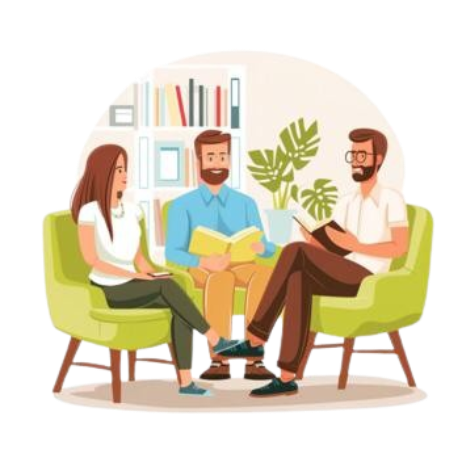

لمن مر بالكثير...
ولم يجد مكاناً يستريح فيه
نحن ندرك أن بعض التجارب تغيّر شكل القلب،وتترك أثراً لا يُرى. لهذا صُمّمت سكون لتكون مساحة رقيقة… خطوة صغيرة تساعدك على استعادة نفسك من جديد وبشكل آمن.
نحن ندرك أن بعض التجارب تغيّر شكل القلب،وتترك أثراً لا يُرى. لهذا صُمّمت سكون لتكون مساحة رقيقة… خطوة صغيرة تساعدك على استعادة نفسك من جديد وبشكل آمن.
في عالمٍ امتلأ بالضجيج والخسارة، وُلدت سكون لتكون مساحة للهدوء... لتكون رفيقًا هادئًا في رحلة التعافي. حيث نوفّر أدوات ذاتية بسيطة تساعد الأفراد على التفريغ النفسي، وفهم مشاعرهم واستعادة توازنهم خطوة بخطوة. نحن لا نقدّم حلولًا سريعة، بل نفتح بابًا للهدوء، ونمنحك مساحة لتكون كما أنت… لأن الشفاء يبدأ عندما يُسمح لنا أن نشعر. مكان يسمح لك بالتوقف، بالتنفس، وبالبدء من جديد على مهل، دون أن تُجبر على شرح ألمك أو كشف هويتك.
استخدام أحدث الأبحاث والأساليب العلاجية المثبتة علمياً
كل خطة علاجية مصممة خصيصاً لتلبية احتياجاتك وأهدافك الفريدة.
خصوصيتك وراحتك هما أولويتنا القصوى

تعرّف على مشاعرك
أجرِ اختبارًا بسيطًا يساعدك على فهم مشاعرك وحالتك النفسية الحالية، ويمنحك نظرة أوضح عن احتياجاتك العاطفية بطريقة سهلة وسريعة.
ابدأ الآن
كتابة يوميات
مساحة شخصية وآمنة تساعدك على كتابة ما يدور في بالك من أفكار ومشاعر يومية، لتفريغ التوتر، وتنظيم أفكارك، وفهم نفسك بشكل أعمق مع مرور الوقت.
ابدأ الآن
تتبع حالتك المزاجية
حدّد شعورك الحالي وسجّل مزاجك اليومي بسهولة، لتتابع تغير حالتك النفسية مع الوقت وتفهم أكثر ما يؤثر على مشاعرك.
ابدأ الآن


مقالات مختارة لدعم صحتك النفسية



